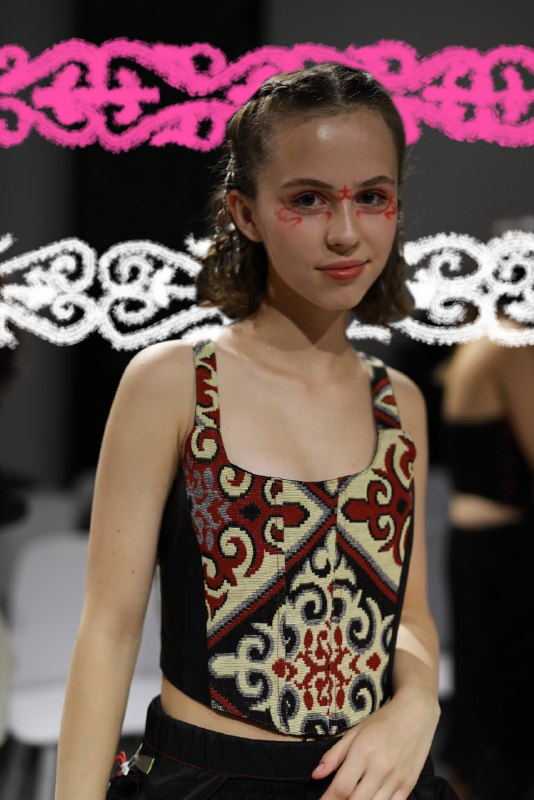

Activities
Throughout my life, I have tried and explored many different activities and hobbies, and I consider myself a versatile person. Here are some of them.
1. Drawing
Art has been a significant part of my life, thanks to my mother, whose work has always been intertwined with creativity. She instilled in me a love for art from a young age, teaching me to draw, sculpt, craft, and appreciate art history and fashion. I cannot pinpoint when I started drawing—as I first picked up pencils at such an early age that I can't even remember. While most of my learning happened at home, I also attended art school, where I honed my skills professionally. Although I currently have limited time to devote to drawing, it remains a cherished hobby for self-expression.
2. Sports
The saying, "A healthy mind in a healthy body," is often heard in my
homeland. So, I naturally found myself close to different physical activities to keep myself resilient and ready for challenges. Over the years, I’ve explored various sports, including karate, ballroom dancing, chess, archery, shooting, and diving. I dedicated two years to synchronized swimming, five years to rock climbing, and one year to track and field. Although, I no longer pursue sports professionally, I stay active with tennis in the summer and skiing or snowboarding during the winter in my hometown. These experiences have instilled in me discipline, focus, and a love for maintaining an active lifestyle.
3. Math Tutoring
In my spare time, I am passionate about sharing my love for mathematics as a tutor. Since this summer, I have been teaching children in grades 1-7 and helping my peers prepare for the unified national exam (UNT). My own score of 48/50 on UNT demonstrates my competence in the subject, and I take pride in helping my students achieve remarkable improvements in their performance and confidence. For me, tutoring is not just about teaching formulas; it’s about showing others how fascinating and incredibly practical mathematics can be, breaking the myth that it is intimidating or inaccessible.
4. Coding and Web Design
Programming is another area where I combine logic and creativity. I enjoy not only writing code but also designing and building web pages. I am skilled in HTML, CSS, Python, and have dabbled in game development using engines like Unity and PyCharm. I have several programming-related projects in mind for the future. By the way, I designed and created this entire website myself!

A volunteer model for an ethnic fashion show.
In 2023, I worked as a model and had the honor of participating in the "Beyond Kazakh Glam" fashion show. This event celebrates Kazakh national style, seamlessly blending it with everyday looks and contemporary fashion while supporting local designers. At the show, I contributed as a volunteer model.
The fashion show's Instagram